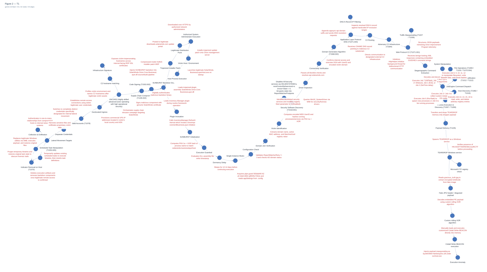
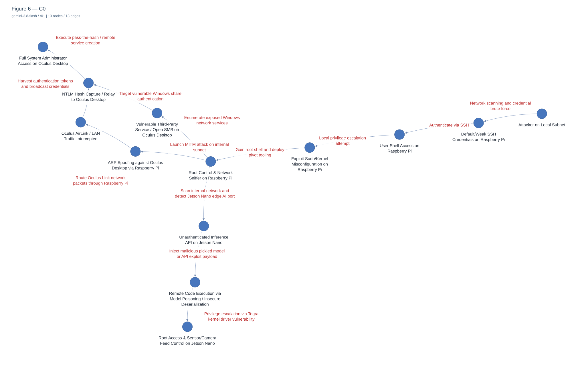
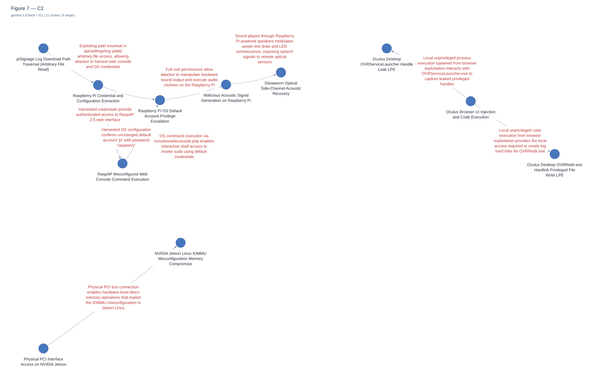
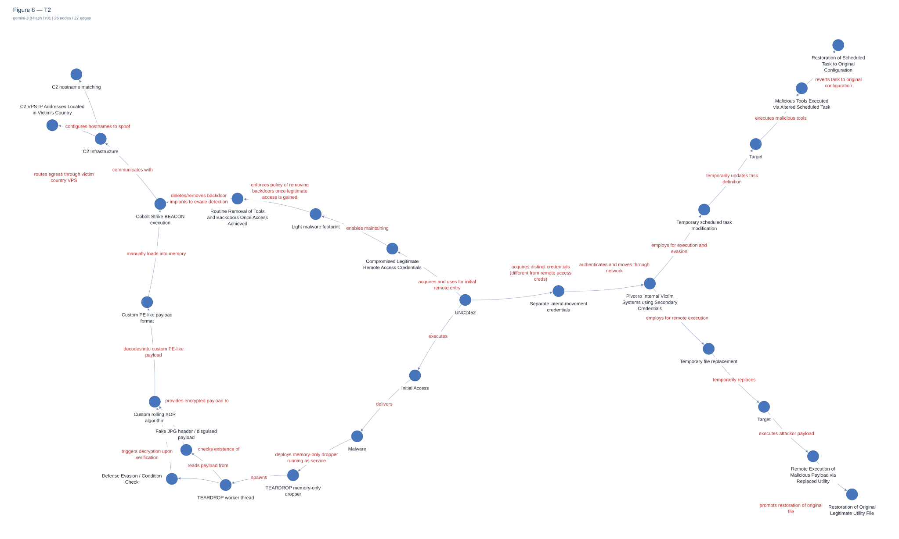
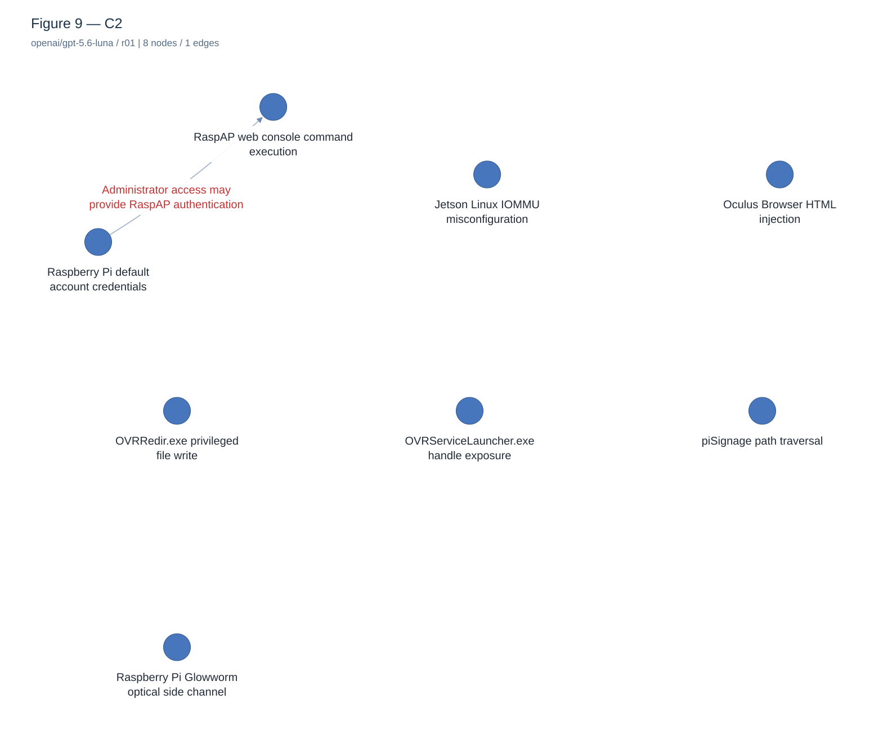
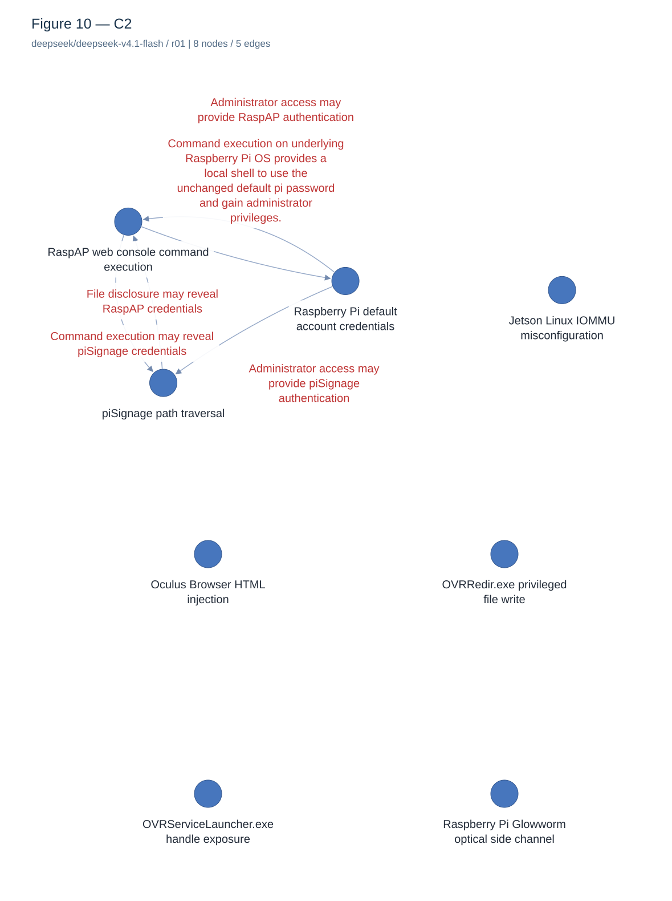
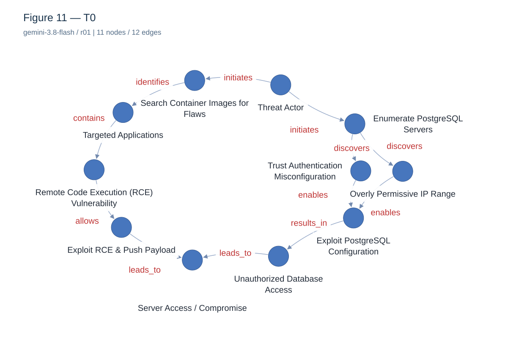
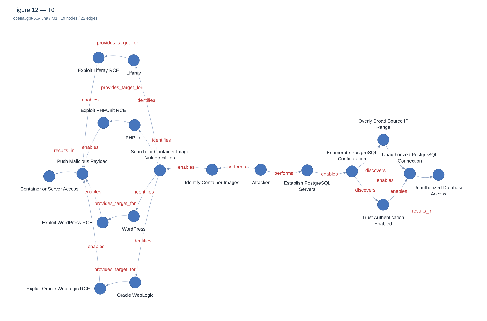
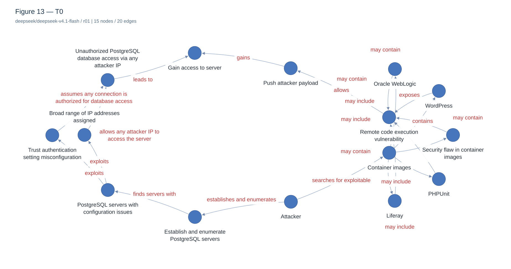

Figure 2 · T1 · gemini-3.8-flash · r01
completed_with_warnings · 52 nodes / 54 edges

Còn 14 nhãn chồng; đổi seed hoặc bố cục
So sánh riêng với hình gốc · Demo tương tácGemini / GPT-5.6 Luna / DeepSeek là các mô hình thay thế. Graph đầy đủ giữ nguyên node/edge từ response; ảnh gom nhóm được ghi rõ và có ánh xạ về graph đầy đủ. Nhãn, bố cục và nguồn gốc được lưu riêng.
Chọn “So sánh riêng” để xem từng cặp ảnh; nhấn SVG hoặc graph tương tác để đọc tên nút/cạnh.
completed_with_warnings · 52 nodes / 54 edges

Còn 14 nhãn chồng; đổi seed hoặc bố cục
So sánh riêng với hình gốc · Demo tương táccompleted_with_warnings · 13 nodes / 13 edges

Khác schema đầy đủ của repo; xem metadata · Còn 1 nhãn chồng; đổi seed hoặc bố cục
So sánh riêng với hình gốc · Demo tương táccompleted · 11 nodes / 9 edges

So sánh riêng với hình gốc · Demo tương táccompleted · 26 nodes / 27 edges

So sánh riêng với hình gốc · Demo tương táccompleted · 8 nodes / 1 edges

So sánh riêng với hình gốc · Demo tương táccompleted · 8 nodes / 5 edges

So sánh riêng với hình gốc · Demo tương táccompleted_with_warnings · 11 nodes / 12 edges

Khác schema đầy đủ của repo; xem metadata
So sánh riêng với hình gốc · Demo tương táccompleted_with_warnings · 19 nodes / 22 edges

Khác schema đầy đủ của repo; xem metadata
So sánh riêng với hình gốc · Demo tương táccompleted_with_warnings · 15 nodes / 20 edges

Khác schema đầy đủ của repo; xem metadata
So sánh riêng với hình gốc · Demo tương tác